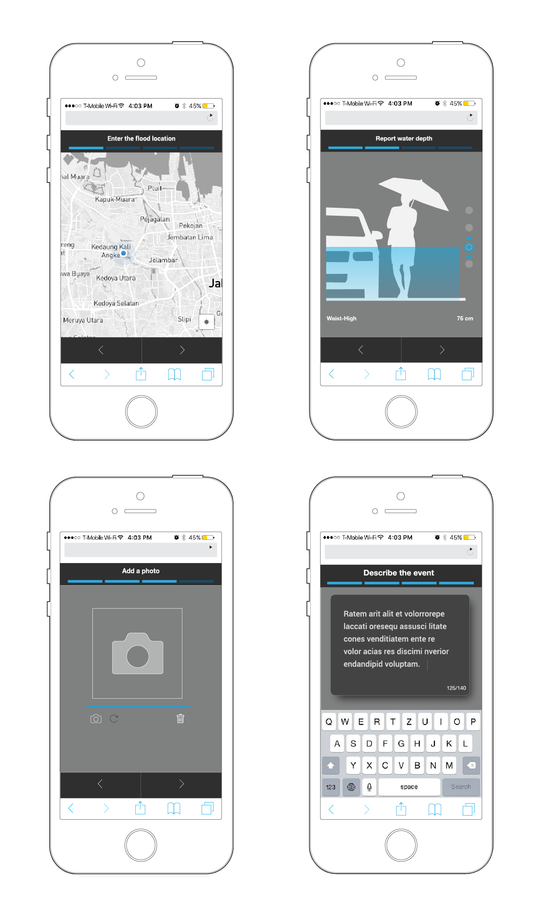

Urban Risk Maps
Urban Risk Maps is is an open source initiative by Urban Risk Lab to map urban flooding in megacities of global south.This platform harnesses the power of social media to gather, sort, and display information about flooding in real time. The availability of near realtime data allows emergency responders to identify hot-spots of flood activity and better coordinate response promptly. The project is novel in that only confirmed reports are collected from residents, helping to reduce the "noise" of social media, which has previously restricted its use by disaster managers.

Verified and timely Information is the single most crucial asset for disaster management and mitigation. By adopting "people as sensors" paradigm, this project is developing a platform to gather and inject real-time crowd-sourced information into existing emergency warning, monitoring and response systems.The platform collects data using a stack of info-cards on a website. The cards are served through a unique link requested via messaging apps or social media platforms. On Social media platforms such as Twitter - Risk map platform listens to specific keywords and send unique links to the users who are describing the event and are ready to fill out a report card. The concept of cards gives tremendous flexibility to the process of data collection as cities can have a set of pre-designed cards for specific disaster type that can be quickly turned on and made available.